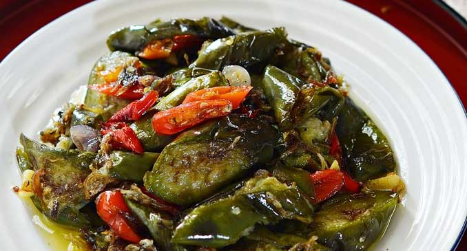

Bahan :
- 6 bh terong hijau
- 100 gr tering, goreng, tiriskan
- 10 bh cabai rawit, iris tipis
- 4 bh cabe merah, iris tipis
- 4 siung bawang merah, iris tipis
- 4 siung bawang putih, iris tipis
- 3 cm lengkuas, memarkan
- 2 lembar daun salam
- 1/4 sdt merica
- Gula, secukupnya
- Garam, secukupnya
Cara Membuat :
Langkah 1 : Cuci bersih terong dan potong-potong sesuai selera. Goreng terong hingga matang, sisihkan.
Langkah 2 : Panaskan sedikit minyak, tumis bawang merah, bawang putih, lengkuas, daun salam, cabe merah dan cabai rawit hingga layu dan harum.
Langkah 3 : Masukkan teri dan terong goreng. Aduk rata.
Masukkan ayam goreng ke dalam bahan saus pedas. Aduk hingga rata. Masak hingga bumbu meresap dengan api kecil. Angkat dan sisihkan.
Langkah 4 : Tambahkan merica, garam dan gula secukupnya, aduk rata. Koreksi rasa.
Langkah 5 : Masak hingga bumbu meresap. Angkat dan sajikan.
Simpel dan mudah bukan membuatnya, cocok untuk menu makan siang atau malam Anda dan keluarga. Sajikan dengan seporsi nasi hangat dan lauk favorit Anda. Selamat mencoba :)